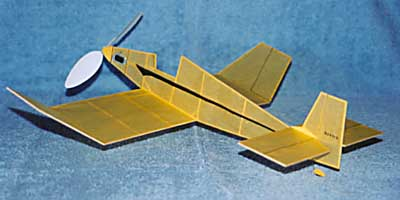
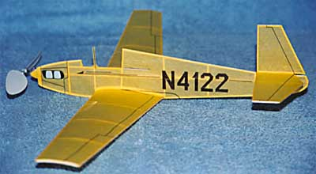

|

Jodel D-9 |
|---|
|

Mooney M-18 Mite |
| David writes...
"The Jodel was designed to be a super-simple project, utilizing a flat wing airfoil cross-section. I drew up another version that has sliced ribs, as well. I rather like a modicum of engine detail, even on a profile model; I found a small piece of thin metallic gray sheet foam for the cylinder bank detail, and capped it off with a dummy valve cover. The exhaust pipes give the model just enough engine detail to look like a proper powerplant. This particular full scale subject used to be based at the Livermore, Ca. airport. It was destroyed in a crash due to engine failure about 8-10 years ago. |
Copyright 2001, Thayer Syme. All rights reserved